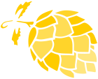

Den 14 november gifter sig Björn Lagerström och Ulrika Andersdotter. Både vigsel och middag äger rum mer eller mindre centralt i Uppsala.
För frågor gällande festligheterna som inte gäller middagen specifikt kan ni vända er till Hedersdonna Karolina Andersdotter eller Hedersknyffel Kristoffer Nilsson.
För frågor och anmälan av upptåg till middagen så kan ni vända er till skålmästare Kee Lundqvist och Per Simonsson genom att skriva till kee.lundqvist(a)gmail.com
Besked om deltagande på festligheterna anmäler du till frullis2026(a)gmail.com senast den 14 oktober.
Mingel med vigsel kommer att äga rum i Odd Fellows lokaler på Börjegatan 44, Uppsala. Minglet öppnar kl. 14:00. Vigseln sker c:a kl 15:00. Dryck och tilltugg kommer att finnas i lokalen.
Brudparet undanber sig presenter i fast form men delar gärna på öl i goda vänners lag. Minglet kommer att vara ett ölmingel (med cider, vin, alkfria alternativ). För de av våra vänner som brygger hemma blir vi mycket glada om ni vill ta med till minglet. Om så är fallet är det bara att hojta så ordnar vi ett bord.
För de som inte brygger öl själva går det lika så bra om man vill köpa med sig något till presentbord (eller "Annandagsbaren" som vi kallar det), eller så umgås vi mer än gärna med er vid annat tillfälle.
Middagen kommer att serveras på Restaurang Borgen, Orphei Drängars Plats 1, Uppsala. Brudparet anländer kl. 18:00 för välkomstskål. Resten av kvällen kommer att spenderas på restaurangen och kvällen avslutas när den stänger kl 01:00.
Barn under 18 är välkomna att delta på vigseln men får stanna hemma från middagen.
Eventuella tal och andra upptåg anmäls i förväg till våra skålmästare Kee och Per på e-postadress kee.lundqvist(a)gmail.com.
Besked om deltagande på festligheterna anmäler du till frullis2026(a)gmail.com senast den 14 oktober. Glöm inte att uppge eventuella mat- och dryckespreferenser! Vi ska gifta oss<, inte förgifta er. Kanske eftergifta. Får se. (Varannan vatten.)